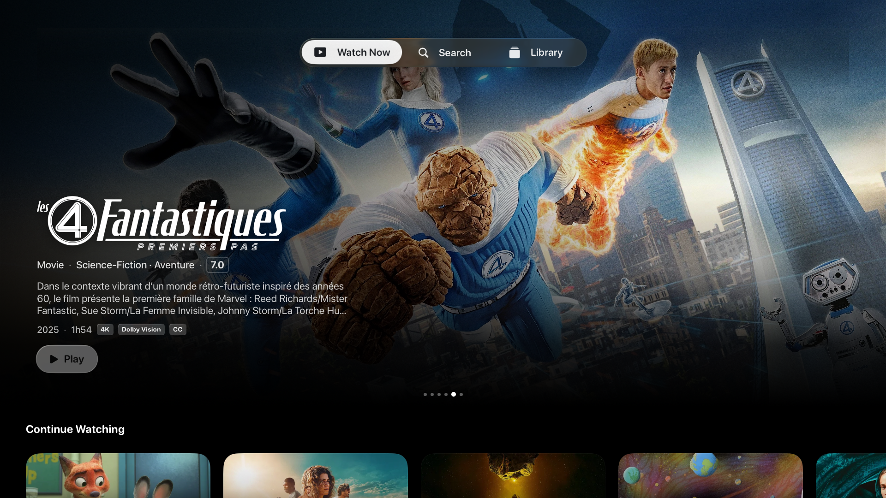
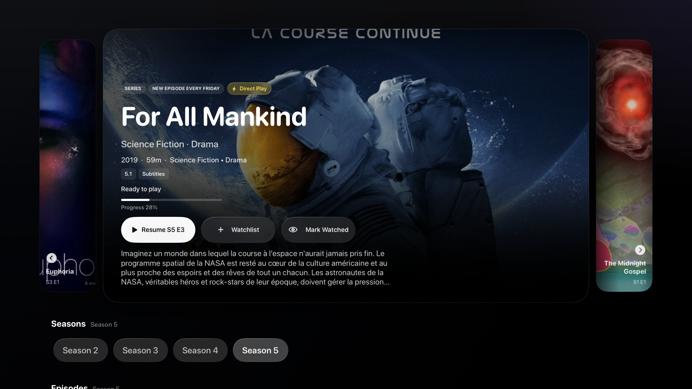

Your Jellyfin library, made for iPhone and Apple TV.
ReelFin turns a self-hosted Jellyfin server into a fast, calm Apple experience. Browse your library, resume faster, and press play from an interface built for the devices you actually use.


Native SwiftUI
Apple playback frameworks
ReelTranscode media prep
Self-hosted Jellyfin
iPhone, iPad, Apple TV
Open ReelFin and start watching faster.
ReelFin focuses on the delays you actually feel: loading Home, finding the next episode, choosing the best playback route, and avoiding live conversion when a file can be prepared in advance.
What ReelFin optimizes
Home
Show cached library rows first, then refresh Jellyfin in the background.
Playback
Use Direct Play when the file is already compatible with Apple playback.
Preparation
Use ReelTranscode for media that should be converted before anyone presses Play.
Cache first. Direct Play when possible. Convert before playback.
ReelFin shows saved rows while Jellyfin refreshes, starts compatible files without server conversion, and leaves difficult files to Jellyfin or ReelTranscode instead of pretending every video should use the same route.
Home appears quickly
Open the app and see cached Continue Watching and library rows while Jellyfin refreshes.
Fewer screens before Play
Resume, search, library, and details all keep the next watch action close.
Compatible files Direct Play
If the container, video, audio, and subtitles work on Apple devices, ReelFin avoids conversion.
Difficult files still have a path
Jellyfin can remux or transcode live, and ReelTranscode can make an Apple-ready file ahead of time.
ReelTranscode
Optimize the library once. Watch faster everywhere.
ReelTranscode is the macOS companion pipeline for media that is not naturally Apple-friendly. It prefers copy or remux before transcoding, targets Apple-native MP4 output, and keeps Dolby Vision or HDR honest instead of silently flattening the file.
View ReelTranscodeCopy and remux first
Keep compatible video and audio streams intact when a lighter container change is enough for Apple playback.
Apple-native output
Prepare MP4 files with Apple-friendly HEVC tagging, faststart, audio fallbacks, and subtitles that fit the platform.
Strict quality checks
Dolby Vision and HDR paths are validated after processing, so an optimized file does not hide a degraded result.
One library. Two viewing modes.
ReelFin keeps the same visual identity across platforms, then adapts the interaction model to the screen in front of you.
iPhone browsing
Open the app, scan big artwork, resume the right item, and get back to watching without extra layers.
Library search
Switch between movies and shows, search quickly, and scan poster grids without leaving the native app flow.
Clear details
Artwork, metadata, watch state, and the play action stay easy to scan when you land on a title.
Living room ready
Apple TV gets wider rows, strong focus targets, and a home screen that works from the couch.

Apple TV is treated like its own product.
The big-screen version is not a stretched phone interface. ReelFin gives the remote room to breathe, keeps focus obvious, and makes the next play action visible from across the room.

Large targets, visible state, and a navigation model built for lean-back control.
Hero images, rows, and details use the room instead of compressing the library.
Resume and watch actions stay prominent so the screen never feels like a settings panel.
Direct Play first. ReelTranscode when the file needs prep.
ReelFin prefers the cleanest live path available: play the original file when Apple devices can handle it, use Jellyfin when recovery is needed, and let ReelTranscode turn stubborn files into better prepared media ahead of time.
Original file path
- Ask Jellyfin for playable sources.
- Pick the direct Apple route when codecs and container match.
- Start playback with less server work and no avoidable conversion.
Server-assisted path
- Use Jellyfin remux or transcode when the source needs help.
- Keep recovery paths available for incompatible files.
- Preserve reliability without hiding route decisions.
ReelTranscode prep
- Process difficult media before the watch session starts.
- Target MP4 output that Apple playback frameworks can handle cleanly.
- Reduce live server conversion pressure for the files you care about most.
Private by default, because your media is yours.
ReelFin is a client for the Jellyfin server you configure. It does not turn your personal library into a tracking surface.
Connect to your server
Your Jellyfin URL, session, and library metadata come from the server you choose.
Keep credentials on device
Authentication tokens are stored in the Apple Keychain, with preferences kept locally.
No ad-tech model
ReelFin does not sell personal data or use your library for cross-app tracking.
Join the beta if you want Jellyfin to feel better on Apple devices.
ReelFin is early enough for feedback to matter. Try the TestFlight build, report rough edges, or follow the project as it moves toward a public App Store release.